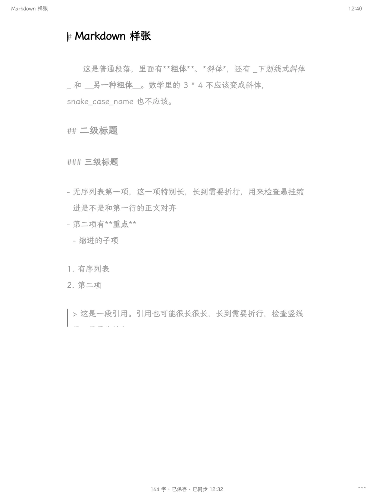

墨墨打
为墨水屏写中文。即开即打。
一个为 Android 墨水屏设计的中文写作 App。没有首页，没有启动画面：打开它，就回到上次的文档，光标停在上次的位置。

## 安静的屏幕
墨水屏上让人难受的，不是刷新慢，而是画面上那些没有意义的变化。墨墨打做的第一件事，是让屏幕在你打字时纹丝不动：只有新字出现。
- 翻页，不滚动
- 写到页底时，一次翻半页；回看时整页翻，保留两行衔接。没有连续滚动，也没有惯性。
- 光标不闪
- 系统光标每半秒闪一次，墨水屏就跟着刷新一次。墨墨打的光标常亮，停下来思考时，屏幕完全静止。
- 专注模式
- 光标所在的段落是黑色，其余是浅灰。换段时，只有两段文字改变颜色。翻页回看时自动暂停。
- Markdown 淡显
#、**、>留在原处，只是变浅；标题、粗体、引用、列表照常渲染。光标移动时排版不变。文件就是标准的.md。- 键盘和笔
- 每个功能都能只用键盘完成，也都能用笔点到。Ctrl K 打开命令面板，Ctrl O 切换文档，都支持拼音首字母：输入
xj就是“新建”。


## 中文排版
为中文写作而调，而不是把英文编辑器翻译一遍。
- 标点避头尾：句号、逗号、右括号不会出现在行首。
- 紧挨着汉字的引号用全角字形，“像这样”；英文里的 "quotes" 保持原样。
- 回车就是分段：写进文件的是一个空行，在任何 Markdown 渲染器里都是真正的段落。段距可以调。Shift Enter 只换行，适合写诗。
- 版心默认每行 30 字，横屏也不会变宽，可以在 24 到 40 字之间调整。
- 段首缩进两字，可选。
- 字数统计：一个汉字算一字，一个英文单词算一字。
- 内置霞鹜文楷屏幕阅读版。想用别的字体，把
.ttf或.otf放进Documents/momoda/fonts/就行。
## 文档就是文件
Documents/momoda/ ├── 春天的随笔.md ├── 2026-10-20.md 还没有标题的文档 ├── fonts/ 外部字体 └── .trash/ 回收站
第一行就是标题，文件名跟着标题走。所有文档都是纯文本的 .md，卸载 App 后依然在，USB、文件管理器、同步工具都能直接读写。
自动保存时先写临时文件再替换，断电也不会留下半个文件。如果文件被别的程序改过，墨墨打不会覆盖它，你的版本会另存一份。
## AI 和同步，都是可选的
默认什么都不连。需要的时候再打开，而且只授权最少的权限。
- AI 助手 Ctrl J
- 填一个 OpenAI 兼容的地址就能用：OpenAI、OpenRouter，或者家里经 Tailscale 接入的 Ollama。润色、续写、精简、翻译，也可以在
prompts.md里写自己的指令。结果先显示在底部面板，你按 Enter 才会替换：AI 不会直接改动正文。API key 用 Android Keystore 加密，只保存在设备上。 - GitHub 同步
- 在手机或电脑上输入屏幕上的 8 位验证码就能登录，不用在墨水屏上打 token。通过公开的 GitHub App“墨墨打同步”授权，只能读写你选中的仓库里的内容，没有其他权限；登录凭证只保存在你的设备上，作者拿不到。两边都改了同一篇时，你的版本优先，另一版另存为副本，任何一方都不会丢。
- 从手机粘贴
- 长文本、接口地址、token 不想在墨水屏上打？在同一个 Wi‑Fi 下，用手机浏览器输入配对码，直接传过去。
## 输入法
推荐 fcitx5-android（小企鹅输入法）配合小鹤双拼：开源，实体键盘支持好。USB 和蓝牙键盘都能直接用。墨墨打不包含输入法，需要另外安装。
快捷键在输入法之前处理：中文状态下按 Ctrl 组合键不会被输入法吞掉，Esc 也不会把 App 关掉。
## 开源与隐私
## 下载
第一个版本即将在 GitHub Releases 发布。
需要 Android 8.0 或更高版本。在汉王 N10 Pro 上开发和测试；其他墨水屏设备、普通的 Android 平板和手机也能用。